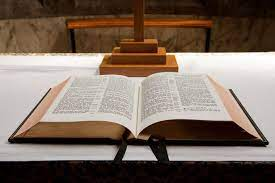

This site focuses on three major themes from recovered texts on One More Voice: finding one’s voice through poetry and public speaking, exploring the dangers of idol worship, and revealing hidden historical figures through found letters of correspondence. These themes are important to investigate because they primarily focus on the early black American experience through the words (both oral and written) from voices traditionally silenced or forgotten as well as those who are now household names and those who enjoyed such a status in their own lifetimes. They also spotlight the fears and religious changes before, during, and after white colonialism and the colonization of Africa and the spread of Christianity among slaves, free men and women, and those who interacted with America, pointing out hypocrisy and irony. Most importantly, they take care to lift up the words and lives and experiences of traditionally ignored, erased, forgotten, or misrepresented people of color through a more modern and person-first lens. It is important to note that this is an ongoing project with many contributors, started as a graduate course assignment, so if you would like to contribute or attribute any of the words or labor, please do not hesitate to join us on our journey to bring these words and the people behind them to light.
I chose these texts because I am interested in the power of the spoken word (and eventual written word). My current studies include that of lesser-known poets (hence my choice for the pieces by/about Claude McKay) and that of famous Civil War-era politicians (hence my choice for the pieces by/about Frederick Douglass). I am also highly involved in researching early African views of Christianity (which makes up the rest of my choices). This project is being created in hopes of linking the word with the “Word” in interesting ways.
Recovered Texts:
Botha, Andries; Anonymous. “Letter to [Harry Smith]” (23 June 1850). Heather F. Ball, Mary Borgo Ton, Adrian S. Wisnicki, eds. One More Voice, site launch edition, 2020, https://onemorevoice.org/html/transcriptions/liv_020011_TEI.html. [This is a letter written by Andries Botha, a former slave, detailing her experiences and the abuse suffered at the hands of her owners.]
Douglass, Frederick. “Letter to John Scoble” (9 May 1846). Anne M. Martin, Lucy McCann, Adrian S. Wisnicki, eds. One More Voice, site launch edition, 2020, https://onemorevoice.org/html/transcriptions/liv_020031_TEI.html. [This is a letter written by and based on the speech by Frederick Douglass advocating for abolition and calling for the recognition of humanity and the rights of slaves.]
Douglass, Frederick. “Letter to Catherine Impey” (9 July 1888). Heather F. Ball, Lucy McCann, Adrian S. Wisnicki, eds. One More Voice, site launch edition, 2020, https://onemorevoice.org/html/transcriptions/liv_020032_TEI.html. [This is an additional letter written by and based on the speech by Frederick Douglass advocating for continued human rights for freed slaves.]
Wainwright, Jacob. “Letter to William O. Livingstone” (October 1873). Anne Martin, Adrian S. Wisnicki, eds. One More Voice, site launch edition, 2020, https://onemorevoice.org/html/transcriptions/liv_000085_TEI.html. [This is a letter describing Jacob Wainwright’s journey to Mecca as a pilgrim and his observations of the cultures, customs, and people of the region.]
Book-Length Published Texts:
Derozio, Henry Louis Vivian. Poems of Henry Louis Vivian Derozio: A Forgotten Anglo-Indian Poet. [Oxford]: Humphrey Milford; Oxford University Press, 1923 [This is a book-length collection of poetry of Henry Louis Vivian Derozio, including but not limited to: “The Harp of India,” “The Fakeer of Jungheera,” and “My Native Land.”]
McKay, Claude. Harlem Shadows. New York: Hartcourt, Brace and Company, 1922. [This is a book-length collection of poetry of Claude McKay, including but not limited to: “The Harlem Dancer,” “Outcast,” and “If We Must Die.”]
Periodical Pieces:
Anonymous, and S[amuel] Crowther, Jr. (1854) 2022. “Confessions of an Idolater.” Edited by Kenneth C. Crowell, Cassie Fletcher, and Jocelyn Spoor. In “BIPOC Voices,” One More Voice, solidarity edition; Collaborative Organization for Virtual Education (COVE). https://onemorevoice.org/html/bipoc-voices/digital-editions-amd/liv_026027_HTML.html. [This is an essay describing the classic Bible verse in the context of an 1854 African slave.]
Anonymous, James White, and C.A. Gollmer. (1854) 2022. “‘What Have I to Do Any More with Idols?’” Edited by Kenneth C. Crowell, Cassie Fletcher, Kayla Morgan, and Jocelyn Spoor. In “BIPOC Voices,” One More Voice, solidarity edition; Collaborative Organization for Virtual Education (COVE). [This is an essay describing the classic Bible verse in the context of an 1854 African slave.]
Project Themes
Theme one is finding one’s voice through poetry and public speaking. This theme is important for this project because it will be primarily focusing on the early black American experience through the words (both oral and written) from voices traditionally silenced or forgotten as well as those who are now household names and those who enjoyed such a status in their own lifetimes.
Theme two is exploring the dangers of idol worship. This theme is important for this project because it will be primarily focusing on the fears and religious changes before, during, and after white colonialism/colonization of Africa and the spread of Christianity among slaves, free men and women, and those who interacted with America, pointing out hypocrisy and irony.
Theme three is revealing hidden historical figures through found letters of correspondence. This theme is important for this project because it will be primarily focusing on lifting up the words and lives and experiences of traditionally ignored, erased, forgotten, or misrepresented people of color through a more modern and person-first lens.
Critical Works (in Support of One More Voice Texts, Sorted by Theme):
Theme One: Finding One’s Own Voice Through Poetry and Public Speaking
Andrews, William L. “Frederick Douglass, Preacher.” American Literature, vol. 54, no. 4, 1982, pp. 592–97. JSTOR, https://doi.org/10.2307/2926008. Accessed 6 Mar. 2023. [This is an essay about the largely-overlooked role of religion and preaching in the life, politics, speeches, and activism of abolitionist Frederick Douglass. This work relates to the theme because it focuses on his public speaking as well as the second theme regarding religious texts as tools to further political agendas.]
Faulkner, Sandra L. “Poetry Is Politics: An Autoethnographic Poetry Manifesto.” International Review of Qualitative Research, vol. 10, no. 1, 2017, pp. 89–96. JSTOR, https://www.jstor.org/stable/26372244. Accessed 6 Mar. 2023. [This is an essay about the intersection of poetry and politics and how poets sometimes use their work to engage with sociopolitical issues and resist oppressive systems. This work relates to the theme because it looks into poetry as resistance in tumultuous political times.]
Jenkins, Lee M. “‘Black Murphy’: Claude McKay and Ireland.” Irish University Review, vol. 33, no. 2, 2003, pp. 279–90. JSTOR, http://www.jstor.org/stable/25504930. Accessed 6 Mar. 2023. [This is an essay about the experiences of the Jamaican American poet Claude McKay during his time in Ireland and its impact on his literary works and political viewpoints. This work relates to the theme because it focuses on a formative time in his writing career and how he was able to include his own background and politics into his poems.]
Theme Two: Exploring the Dangers of Idol Worship
Copeland, M. Shawn. “Anti-Blackness and White Supremacy in the Making of American Catholicism.” American Catholic Studies, vol. 127, no. 3, 2016, pp. 6–8. JSTOR, http://www.jstor.org/stable/44195851. Accessed 6 Mar. 2023. [This is an essay about the exploration of how American Catholicism being shaped by and complicit in the systemic racism of anti-Blackness and white supremacy. This work relates to the theme because these ideas are often-times hypocritically tied to misrepresented Bible passages.]
Falola, Toyin, and Theophilus Olabode Avoseh. “The Minor Works of T. O. Avoseh.” History in Africa, vol. 19, 1992, pp. 237–62. JSTOR, https://doi.org/10.2307/3172000. Accessed 6 Mar. 2023. [This is an essay and collection about the works and critical analysis in response to the lesser-known works of T. O. Avoseh, a Nigerian writer and intellectual, offering insights into his perspectives on culture, politics, and social issues. This work relates to the theme because the author’s works are greatly inspired by his own views on the faith he held and the religions he encountered while enjoying a writing career.]
Nkomazana, Fidelis, and Senzokuhle Doreen Setume. “Missionary Colonial Mentality and the Expansion of Christianity in Bechuanaland Protectorate, 1800 to 1900.” Journal for the Study of Religion, vol. 29, no. 2, 2016, pp. 29–55. JSTOR, http://www.jstor.org/stable/24902913. Accessed 6 Mar. 2023. [This is an essay about the role of Christian missionaries in the colonization and conversion of the Bechuanaland Protectorate (present-day Botswana) and its effects on the local people and their culture. This work relates to the theme because it shows both the positive and negative affects religion can have on a people who have a new one brought to or forced upon them.]
Theme Three: Revealing Hidden Historical Figures through Found Letters of Correspondence
Baker, Thomas N. “‘A Slave’ Writes Thomas Jefferson.” The William and Mary Quarterly, vol. 68, no. 1, 2011, pp. 127–54. JSTOR, https://doi.org/10.5309/willmaryquar.68.1.0127. Accessed 6 Mar. 2023. [This is an essay about the historical significance and political implications of a letter written by a slave to President Thomas Jefferson and the complexities of using such a source in the study of slavery and the early African American experience. This work relates to the theme because it shows the complexities and intricacies of relationships between and among slaves and slaveowners in early United States history.]
Brantley, Daniel. “Black Diplomacy and Frederick Douglass’ Caribbean Experiences, 1871 and 1889-1891: The Untold History.” Phylon (1960-), vol. 45, no. 3, 1984, pp. 197–209. JSTOR, https://doi.org/10.2307/274404. Accessed 6 Mar. 2023. [This is an essay about the mostly obscure diplomatic and pollical work of Frederick Douglass in the Caribbean and highlights his contributions to the international struggle against racism and colonialism outside of the United States. This work relates to the theme because it shows the importance of studying historical figures in order to find interesting facts that make them more well-rounded humans.]
McMullen, Kim. “THE FICTION OF CORRESPONDENCE: ‘LETTERS’ AND HISTORY.” Modern Fiction Studies, vol. 36, no. 3, 1990, pp. 405–20. JSTOR, http://www.jstor.org/stable/26282971. Accessed 6 Mar. 2023. [This is an essay about the use of epistolary form in literature to challenge the dominant historical narratives and reveal suppressed voices and perspectives. This work relates to the theme because it helps amplify the voices of those people often forgotten or erased in history books.]
The Word and the Word Main 